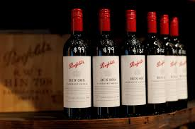

O projeto consiste no desenvolvimento de um portal de e-commerce para a Vinharia Agnello, uma loja tradicional de vinhos de São Paulo que sempre se destacou pelo atendimento personalizado.
Com o impacto da pandemia, surgiu a necessidade de migrar para o ambiente digital, mantendo a essência da experiência.
O sistema permitirá venda online, recomendações personalizadas e sugestões de harmonização, criando um ambiente acolhedor.